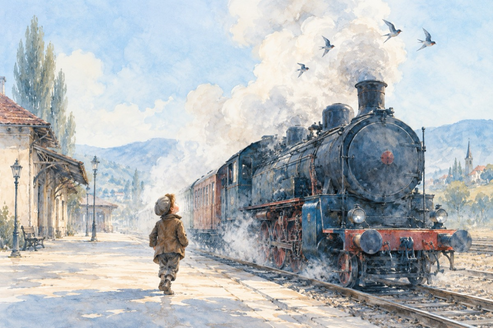

Geo Călugăru la 75 de ani
Așa a fost să fie și i-a fost scris
Povestea-i simplă aparent, dacă gândești
Geo Călugăru în mod precis
Zburat-a-n lume de la Mărășești!
Acolo unde istoria s-a scris
Ieșind la luptă în izmene cu arma-n mână
Dușmanu-a fost învins
De nimeni altul, ci de nația română!
Copil fiind prin gară se plimba
Și a-nceput ca să citească scrisul pe vagoane
De la locomotiva învățat-a de-a umbla
Iar leu-n buzunar dacă-l avea, lua bomboane!...
Prima lucrare scrisă ce-a făcut
A fost numele său în ea
Atât de mult acesta i-a plăcut
Încât s-a cununat cu poezia!
De-atuncea până azi și mai departe
La frumoasa vârstă de 75 de ani.
Și-a scris opera, carte după carte,
Iar ca actor, poet și scriitor, are mulți fani
De-aceea, dragă Geo, pe drept ți se cuvine
Urarea din suflet: Să trăiești întru mulți ani!
LA MULȚI ANI!
Vasile Groza